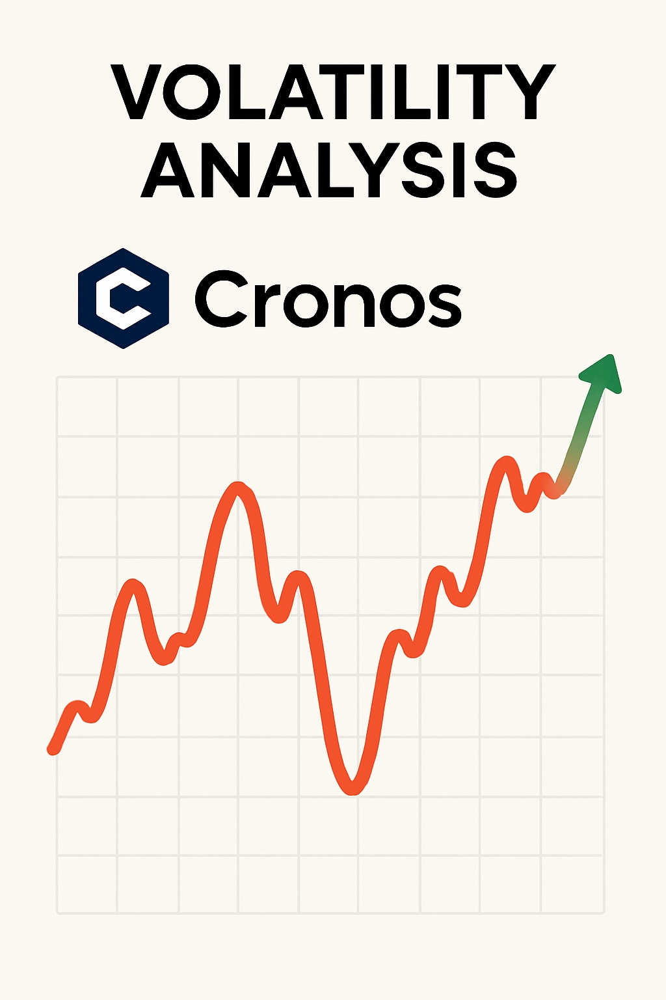

Cronos Price Prediction for End of 2025: In-Depth Analysis and Insights
The information in this article is provided for educational purposes only and is not investment advice. Cryptocurrency investments carry risks.
Introduction
As of August 20, 2025, 01:12 AM EEST, Cronos (CRO) is trading at approximately $0.1493, reinforcing its position as a key utility token within the Crypto.com ecosystem. Developed by Crypto.com, Cronos is an EVM-compatible, open-source blockchain built on the Cosmos SDK, designed to support decentralized applications (dApps), payments, and DeFi services. Its interoperability with Ethereum and Cosmos ecosystems, along with features like low-cost transactions and high-profile partnerships, positions it as a significant player in the cryptocurrency market. This article provides a comprehensive analysis of CRO’s price outlook for the end of 2025, exploring bullish and bearish scenarios, key growth drivers, and potential risks based on current market trends and ecosystem developments.

Current Situation
As of August 20, 2025, Cronos’s price is around $0.1493, reflecting a 4.1% decline over the past 24 hours but a 15.26% gain over the past week, with a market cap of approximately $3.33 billion. Over the past 30 days, CRO has shown moderate volatility of 5.8%, with 50% of days closing in the green. The Fear and Greed Index at 65 indicates cautious optimism among investors, driven by Crypto.com’s expanding user base of 140 million, increased DeFi activity, and a total value locked (TVL) of $468.17 million. Since its all-time low of $0.01149 in December 2018, CRO has grown by 1,200%, though it remains 85.4% below its all-time high of $0.9698 in November 2021. Recent bullish patterns, such as a breakout from a falling pennant, suggest potential for upward momentum.
Price Predictions for End of 2025
Analyst forecasts for Cronos by December 2025 vary widely based on market conditions and technical analyses. Bearish scenarios suggest a potential decline to $0.0483–$0.082 if a projected 30–50% market correction occurs in early 2025. Moderate projections estimate CRO stabilizing between $0.13 and $0.35, supported by steady adoption of Crypto.com’s services and DeFi growth. Bullish forecasts predict CRO could reach $0.354–$1.92, with some analysts projecting a high of $1.80 if Crypto.com’s partnerships and DeFi activity surge. A specific forecast from CoinGape suggests CRO could hit $0.1669 by December 2025, driven by bullish market trends and technical patterns like a bullish engulfing candlestick.
Factors Driving Price Growth
- Crypto.com Ecosystem Growth: Crypto.com’s 140 million users and services like exchange, debit cards, and DeFi drive demand for CRO.
- DeFi and dApp Adoption: Cronos’s TVL of $468.17 million and support for dApps like VVS Finance and Tectonic Finance enhance its utility.
- Strategic Partnerships: High-profile collaborations with celebrities and sports teams boost Crypto.com’s visibility and CRO adoption.
- Market Rally: A projected cryptocurrency market surge in 2025, particularly from February to April, could create a favorable environment for CRO’s price growth.
- Network Upgrades: Features like the Cronos cross-bridge mainnet beta and planned protocol governance in Q4 2025 improve interoperability and scalability.
Risks and Downward Factors
- Market Volatility: A projected 30–50% market correction in early 2025 could exert downward pressure on CRO’s price, impacting investor sentiment.
- Regulatory Risks: Stricter global regulations on centralized exchanges and DeFi platforms could limit Crypto.com’s growth and CRO adoption.
- Competition: Competing blockchains like Binance Smart Chain, Solana, and Ethereum could challenge Cronos’s market share in DeFi and dApps.
Volatility Analysis
From July to August 2025, Cronos’s price rose from $0.08 to $0.1493, marking an 86.6% gain with a volatility of 5.8%, indicating moderate stability compared to historical trends. Technical indicators, including a bullish engulfing pattern on the weekly chart and a 50-day Simple Moving Average (SMA) showing upward momentum, suggest continued potential for growth. A projected market recovery from February to April 2025 could further support price increases, particularly as Crypto.com expands its user base and DeFi offerings. Cronos’s robust ecosystem, with a circulating supply of 34 billion CRO and a TVL of $468.17 million, positions it well for sustained adoption and value appreciation.
Conclusion
By the end of 2025, Cronos’s price is projected to range between $0.13 and $0.35, with the potential to reach $1.80 in a bullish market driven by Crypto.com’s ecosystem growth, DeFi adoption, and strategic partnerships. However, investors should remain cautious of market volatility, regulatory uncertainties, and competition from other blockchains. Thorough research and risk management are essential before investing in Cronos.